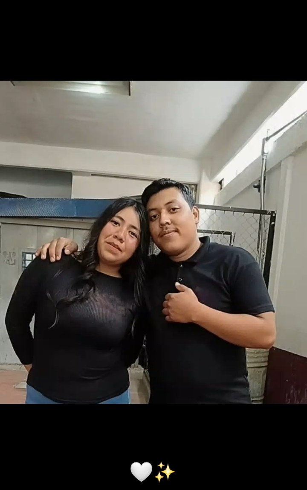

que cunplas tus sueños
Hoy no escribo para celebrar, sino para dejar en palabras lo que el corazón ya no puede guardar. Fuiste luz en días nublados, calma en medio del ruido, y aunque el tiempo pasó sin aviso, nunca dejaste de ser algo bonito en mi vida. A veces las cosas no salen como uno quiere, y aunque duela aceptarlo, no siempre el amor se queda, no siempre dos caminos se vuelven uno. Me quedo con lo bueno, con tu sonrisa, con cada momento que, sin darte cuenta, hiciste especial para mí. Tal vez no fui lo que buscabas, o tal vez el destino tenía otros planes, pero eso no cambia lo que sentí, ni lo que aún, en silencio, permanece. Hoy te dejo ir despacio, sin rencor, sin reclamos, solo con un nudo en la garganta y un montón de recuerdos guardados. No es un adiós lleno de enojo, es uno lleno de cariño, de esos que duelen, pero que también enseñan. Ojalá la vida te regale todo lo bonito que mereces, que encuentres paz, felicidad y alguien que sepa cuidar tu corazón. Y si algún día piensas en mí, solo recuerda que hubo alguien que te quiso de verdad, aunque no se quedara para siempre. Esto no es un adiós definitivo… es solo un hasta luego, porque hay personas que nunca se van del todo, aunque ya no estén.

❤️
con buenos deseos